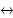

18 Bits und Bytes und Mathematisches
»Vieles hätte ich verstanden, wenn man es mir nicht erklärt hätte.«
– Stanislaw Jerzy Lec (1909–1966)
Dieses Kapitel betrachtet die Repräsentationen der Zahlen genauer und wie binäre Operatoren auf diesen Werten arbeiten. Nachdem die Ganzzahlen genauer beleuchtet wurden, folgen eine detaillierte Darstellung der Fließkommazahlen und anschließend mathematische Grundfunktionen wie max(), sin(), abs(), die in Java die Klasse Math realisiert.

18.1 Bits und Bytes *
Ein Bit ist ein Informationsträger für die Aussage wahr oder falsch. Durch das Zusammensetzen von einzelnen Bits entstehen größere Folgen wie das Byte, das aus 8 Bit besteht. Da jedes Bit anders belegt sein kann, bildet es in der Summe unterschiedliche Werte. Werden 8 Bit zugrunde gelegt, lassen sich durch unterschiedliche Belegungen 256 unterschiedliche Zahlen bilden. Ist kein Bit des Bytes gesetzt, so ist die Zahl 0. Jede Stelle im Byte bekommt dabei eine Wertigkeit zugeordnet. Die Wertebelegung für die Zahl 19 berechnet sich aus 16 + 2 + 1, da sie aus einer Anzahl von Summanden der Form 2^n zusammengesetzt ist: 19dez = 16 + 2 + 1 = 1 · 2^4 + 0 · 2^3 + 0 · 2^2 + 1 · 2^1 + 1 · 2^0 =10011bin.
| Bit | 7 | 6 | 5 | 4 | 3 | 2 | 1 | 0 |
| Wertigkeit | 27=128 | 26=64 | 25=32 | 24=16 | 23=8 | 22=4 | 21=2 | 20=1 |
| Belegung für 19 | 0 | 0 | 0 | 1 | 0 | 0 | 1 | 1 |
18.1.1 Die Bit-Operatoren Komplement, Und, Oder und Xor
Mit Bit-Operatoren lassen sich Binäroperationen auf Operanden durchführen, um beispielsweise ein Bit eines Bytes zu setzen. Zu den Bit-Operationen zählen Verknüpfungen, Schiebeoperationen und das Komplement. Durch die bitweisen Operatoren können einzelne Bits abgefragt und manipuliert werden. Als Verknüpfungen bietet Java die folgenden Bit-Operatoren an:
Betrachten wir allgemein die binäre Verknüpfung a # b. Bei der binären bitweisen Und-Verknüpfung mit & gilt für jedes Bit: Ist im Operand a irgendein Bit gesetzt und an gleicher Stelle auch im Operand b, so ist auch das Bit an der Stelle im Ergebnis gesetzt. Bei der Oder-Verknüpfung mit | muss nur einer der Operanden gesetzt sein, damit das Bit im Ergebnis gesetzt ist. Bei einem exklusiven Oder (Xor) ist das Ergebnis 1, wenn nur genau einer der Operanden 1 ist. Sind beide gemeinsam 0 oder 1, ist das Ergebnis 0. Dies entspricht einer binären Addition oder Subtraktion. Fassen wir das Ergebnis noch einmal in einer Tabelle zusammen:
| Bit 1 | Bit 2 | ~Bit 1 | Bit 1 & Bit 2 | Bit 1 | Bit 2 | Bit 1 ^ Bit 2 |
| 0 | 0 | 1 | 0 | 0 | 0 |
| 0 | 1 | 1 | 0 | 1 | 1 |
| 1 | 0 | 0 | 0 | 1 | 1 |
| 1 | 1 | 0 | 1 | 1 | 0 |
Nehmen wir zum Beispiel zwei Ganzahlen:
| binär | dezimal | |
| Zahl 1 | 010011 | 16 + 2 + 1 = 19 |
| Zahl 2 | 100010 | 32 + 2 = 34 |
| Zahl 1 & Zahl 2 | 000010 | 19 & 34 = 2 |
| Zahl 1 | Zahl 2 | 110011 | 19 | 34 = 51 |
| Zahl 1 ^ Zahl 2 | 110001 | 19 ^ 34 = 49 |
Variablen mit Xor vertauschen
Eine besonders trickreiche Idee für das Vertauschen von Variableninhalten arbeitet mit dem Xor-Operator und benötigt keine temporäre Zwischenvariable. Die Zeilen zum Vertauschen von x und y lauten wie folgt:
int x = 12,
y = 49;
x ^= y; // x = x ^ y = 001100bin ^ 110001bin = 111101bin
y ^= x; // y = y ^ x = 110001bin ^ 111101bin = 001100bin
x ^= y; // x = x ^ y = 111101bin ^ 001100bin = 110001bin
System.out.println( x + " " + y ); // Ausgabe ist: 49 12
Der Trick funktioniert, da wir mit Xor etwas »hinein- und herausrechnen« können. Zuerst rechnet die erste Zeile das y in das x. Wenn wir anschließend die Zuweisung an das y machen, dann ist das der letzte schreibende Zugriff auf y, also muss hier schon das vertauschte Ergebnis stehen. Das stimmt auch, denn expandieren wir die zweite Zeile, steht dort: »y ^ x wird zugewiesen an y«, und dies ist y ^ (x ^ y). Der letzte Ausdruck verkürzt sich zu y = x, da aus der Definition des Xor-Operators für einen Wert a hervorgeht: a ^ a = 0. Die Zuweisung hätten wir zwar gleich so schreiben können, aber dann wäre der Wert von y verloren gegangen. Der steckt aber noch in x aus der ersten Zuweisung. Betrachten wir daher die letzte Zeile x ^ y: y hat den Startwert von x, doch in x steckt ein Xor-y. Daher ergibt x ^ y den Wert x ^ x ^ y, und der verkürzt sich zu y. Demnach haben wir den Inhalt der Variablen vertauscht. Im Übrigen können wir für die drei Xor-Zeilen alternativ schreiben:
y ^= x ^= y; // Auswertung automatisch y ^= (x ^= y)
x ^= y;
Da liegt es doch nahe, die Ausdrücke weiter abzukürzen zu x ^= y ^= x ^= y. Doch leider ist das falsch (es kommt für x immer null heraus). Motivierten Lesern bleibt dies als Denksportaufgabe überlassen.
18.1.2 Repräsentation ganzer Zahlen in Java – das Zweierkomplement
Das Zweierkomplement definiert für positive und negative Ganzzahlen folgende Kodierung:
- Das Vorzeichen einer Zahl bestimmt ein Bit, das 1 bei negativen und 0 bei positiven Zahlen ist.
- Um eine 0 darzustellen, ist kein Bit gesetzt.
Java kodiert die Ganzzahldatentypen byte, short, int und long immer im Zweierkomplement (der Datentyp char definiert keine negativen Zahlen). Mit dieser Kodierung gibt es eine negative Zahl mehr als positive, da es im Zweierkomplement keine positive und negative 0 gibt, sondern nur eine »positive« mit der Bitmaske 0000...0000.
| dezimal | binär | hexadezimal |
| –32.768 | 1000 0000 0000 0000 | 80 00 |
| –32.767 | 1000 0000 0000 0001 | 80 01 |
| –32.766 | 1000 0000 0000 0010 | 80 02 |
| ... | ||
| –2 | 1111 1111 1111 1110 | FF FE |
| –1 | 1111 1111 1111 1111 | FF FF |
| 0 | 0000 0000 0000 0000 | 00 00 |
| 1 | 0000 0000 0000 0001 | 00 01 |
| 2 | 0000 0000 0000 0010 | 00 02 |
| ... | ||
| 32.766 | 0111 1111 1111 1110 | 7F FE |
| 32.767 | 0111 1111 1111 1111 | 7F FF |
Bei allen negativen Ganzzahlen ist also das oberste Bit mit 1 gesetzt.
18.1.3 Das binäre (Basis 2), oktale (Basis 8), hexadezimale (Basis 16) Stellenwertsystem
Die Literale für Ganzzahlen lassen sich in vier unterschiedlichen Stellenwertsystemen angeben. Das natürlichste ist das Dezimalsystem (auch Zehnersystem genannt), bei dem die Literale aus den Ziffern »0« bis »9« bestehen. Zusätzlich existieren die Binär- (erst ab Java 7), Oktal- und Hexadezimalsysteme, die die Zahlen zur Basis 2, 8 und 16 schreiben. Bis auf Dezimalzahlen beginnen die Zahlen in anderen Formaten mit einem besonderen Präfix.
| Präfix | Stellenwertsystem | Basis | Darstellung von 1 |
| 0b oder 0B | binär | 2 | 0b1 oder 0B1 |
| 0 | oktal | 8 | 01 |
| Kein | dezimal | 10 | 1 |
| 0x oder 0X | hexadezimal | 16 | 0x1 oder 0X1 |
Ein hexadezimaler Wert beginnt mit »0x« oder »0X«. Da zehn Ziffern für 16 hexadezimale Zahlen nicht ausreichen, besteht eine Zahl zur Basis 16 zusätzlich aus den Buchstaben »a« bis »f« (beziehungsweise »A« bis »F«). Das Hexadezimalsystem heißt auch Sedezimalsystem.[217](Das Präfix »octo« bei »Oktalsystem« stammt aus dem Lateinischen. Das Wort »Hexadezimal« enthält zwei Bestandteile aus zwei verschiedenen Sprachen: »hexa« stammt aus dem Griechischen und »decem« (zehn) aus dem Lateinischen. Die alternative Bezeichnung Sedezimalzahl bzw. sedezimal (engl. sexadecimal nicht sexagesimal, das ist Basis 60) ist rein aus dem Lateinischen abgeleitet, aber im Deutschen unüblich. Über den Ursprung des Wortes »Hexadezimal« finden Sie mehr unter http://en.wikipedia.org/wiki/Hexadecimal#Etymology.)
Ein oktaler Wert beginnt mit dem Präfix »0«. Mit der Basis 8 werden nur die Ziffern »0« bis »7« für oktale Werte benötigt. Der Name stammt von dem lateinischen »octo«, was auf Deutsch »acht« heißt. Das Oktalsystem war früher eine verbreitete Darstellung, da nicht mehr einzelne Bits solo betrachtet werden mussten, sondern 3 Bits zu einer Gruppe zusammengefasst wurden. In der Kommunikationselektronik ist das Oktalsystem noch weiterhin beliebt, spielt aber sonst keine Rolle.
Für Dualzahlen (also Binärzahlen zur Basis 2) wurde eine neue Notation in Java 7 eingeführt. Das Präfix ist »0b« oder »0B«. Es sind nur die Ziffern »0« und »1« erlaubt.
| Beispiel |
|
Gib Dezimal-, Binär, Oktal- und Hexadezimalzahlen aus: System.out.println( 1243 ); // 1243 int i = 118; |
18.1.4 Auswirkung der Typanpassung auf die Bitmuster
Die Typanpassung führt dazu, dass bei Ganzzahlen die oberen Bits einfach abgeschnitten werden. Bei einer Anpassung von Fließkommazahlen auf Ganzzahlen wird gerundet. Was genau passiert, soll dieser Abschnitt zeigen.
Explizite Typumwandlung bei Ganzzahlen
Bei der Konvertierung eines größeren Ganzzahltyps in einen kleineren werden die oberen Bits abgeschnitten. Eine Anpassung des Vorzeichens findet nicht statt. Die Darstellung in Bit zeigt das sehr anschaulich:
int ii = 123456789; // 00000111010110111100110100010101
int ij = –123456; // 11111111111111100001110111000000
short si = (short) ii; // 1100110100010101
short sj = (short) ij; // 0001110111000000
System.out.println( si ); // –13035
System.out.println( sj ); // 7616
si wird eine negative Zahl, da das 16. Bit beim int ii gesetzt war und nun beim short das negative Vorzeichen anzeigt. Die Zahl hinter ij hat kein 16. Bit gesetzt, und so wird das short sj positiv.
Umwandlung von short und char
Ein short hat wie ein char eine Länge von 16 Bit. Doch diese Umwandlung ist nicht ohne ausdrückliche Konvertierung möglich. Das liegt am Vorzeichen von short. Zeichen sind per Definition immer ohne Vorzeichen. Würde ein char mit einem gesetzten höchstwertigen letzten Bit in ein short konvertiert, käme eine negative Zahl heraus. Ebenso wäre, wenn ein short eine negative Zahl bezeichnet, das oberste Bit im char gesetzt, was unerwünscht ist. Die ausdrückliche Umwandlung erzeugt immer nur positive Zahlen.
Der Verlust bei der Typumwandlung von char nach short tritt etwa bei der Han-Zeichenkodierung für chinesische, japanische oder koreanische Zeichen auf, weil dort im Unicode das erste Bit gesetzt ist, das bei der Umwandlung in ein short dem nicht gesetzten Vorzeichen-Bit weichen muss.
Typanpassungen von int und char
Die Methode printXXX() ist mit den Typen char und int überladen, und eine Typumwandlung führt zur gewünschten Ausgabe:
int c1 = 65;
char c2 = 'A';
System.out.println( c1 ); // 65
System.out.println( (int)c2 ); // 65
System.out.println( (char)c1 ); // A
System.out.println( c2 ); // A
System.out.println( (char)(c1 + 1) ); // B
System.out.println( c2 + 1 ); // 66
Einen Ganzzahlwert in einem int können wir als Zeichen ausgeben, genauso wie eine char-Variable als Zahlenwert. Wir sollten beachten, dass eine arithmetische Operation auf char-Typen zu einem int führt. Daher funktioniert für ein char c Folgendes nicht:
c = c + 1;
Richtig wäre:
c = (char)(c + 1)
Unterschiedliche Wertebereiche bei Fließ- und Ganzzahlen
Natürlich kann die Konvertierung double  long nicht verlustfrei sein. Wie sollte das auch gehen? Zwar verfügt sowohl ein long als auch ein double über 64 Bit zur Datenspeicherung, aber ein double kann eine Ganzzahl nicht so effizient speichern wie ein long und hat etwas »Overhead« für einen großen Exponenten. Bei der impliziten Konvertierung eines long in ein double können einige Bit als Informationsträger herausfallen, wie das folgende Beispiel illustriert:
long l = 1111111111111111111L; // 1111111111111111111
double d = l; // 1111111111111111170 (1.11111111111111117E18)
long m = (long) d; // 1111111111111111168
Java erlaubt ohne explizite Anpassung die Konvertierung eines long an ein double und auch an ein noch kleineres float, was vielleicht noch merkwürdiger ist, da float nur eine Genauigkeit von 6 bis 7 Stellen hat, long hingegen 18 Stellen hat.
long l = 1000000000000000000L;
float f = l;
System.out.printf( "%f", f ); // 999999984306749440,000000
Materialverlust durch Überläufe *
Überläufe bei Berechnungen können zu schwerwiegenden Fehlern führen, so wie beim Absturz der Ariane 5 am 4. Juni 1996, genau 36,7 Sekunden nach dem Start. Die europäische Raumfahrtbehörde European Space Agency (ESA) hatte die unbemannte Rakete, die vier Satelliten an Bord hatte, von Französisch-Guayana aus gestartet. Glücklicherweise kamen keine Menschen ums Leben, doch der materielle Schaden belief sich auf etwa 500 Millionen US-Dollar. In dem Projekt steckten zusätzlich Entwicklungskosten von etwa 7 Milliarden US-Dollar. Der Grund für den Absturz war ein Rundungsfehler, der durch die Umwandlung einer 64-Bit-Fließkommazahl (die horizontale Geschwindigkeit) in eine vorzeichenbehaftete 16-Bit-Ganzzahl auftrat. Die Zahl war leider größer als 2^15 – 1 und die Umwandlung nicht gesichert, da die Programmierer diesen Zahlenbereich nicht angenommen hatten. Als Konsequenz brach das Lenksystem zusammen, und die Selbstzerstörung wurde ausgelöst, da die Triebwerke abzubrechen drohten. Das wirklich Dumme an dieser Geschichte ist, dass die Software nicht unbedingt für den Flug notwendig war und nur den Startvorbereitungen diente. Im Fall einer Unterbrechung während des Countdowns hätte das Programm schnell abgebrochen werden können. Ungünstig war, dass der Programmteil unverändert durch Wiederverwendung per Copy & Paste aus der Ariane-4-Software kopiert worden war, die Ariane 5 aber schneller flog.
18.1.5 byte als vorzeichenlosen Datentyp nutzen
Ein byte kann zwar automatisch in einen int konvertiert werden, aber durch den beschränkten Wertebereich eines byte kann nicht jedes int in einem byte Platz finden. So muss bei Zahlen, die nicht im Wertebereich –128 bis +127 liegen, eine explizite Typanpassung durchgeführt werden. Nun lassen sich zwei Fälle unterscheiden: Der in ein byte eingezwängte Wert ist kleiner gleich 255 oder echt größer als 255. Ist die Zahl wirklich größer gleich 256, so gehen Bits verloren, denn mehr als 8 Bit kann ein Byte nicht aufnehmen. Liegt die Zahl jedoch zwischen +127 und +255, so kann das byte prinzipiell das gegebene Bitmuster annehmen, und das Vorzeichenbit kann zur Speicherung verwendet werden. In der Konsolenausgabe sieht das dann merkwürdig aus, da die Zahlen negativ sind, aber das Bitmuster ist korrekt. Das folgende Beispiel zeigt das (angenommen System und Integer sind statisch importiert):
byte b = (byte) 255;
int i = 255;
out.printf( "%d %s%n", b, toBinaryString(b) ); // –1 11111111111111111111111111111111
out.printf( "%d %s%n", i, toBinaryString(i) ); // 255 11111111
Die Belegung der unteren 8 Bit von b und i ist identisch.
Um bei der Konsolenausgabe einen Datenwert zwischen 0 und 255 zu bekommen, also das Byte vorzeichenlos zu sehen, schneiden wir mit der Und-Verknüpfung die unteren 8 Bit heraus – alle anderen Bits bleiben also ausgenommen:
static int byteToInt( byte b )
{
return b & 0xff;
}
Eine explizite Typanpassung mit (int)(b & 0xff) ist nicht nötig, da der Compiler bei der arithmetischen Und-Operation automatisch in ein int konvertiert. Damit lässt sich für unser b die 255 erfragen:
byte b = (byte) 255; // oder byte b = 255y; seit Java 7
System.out.println( byteToInt( b ) ); // 255
Konvertierungen von byte in ein char
Mit einer ähnlichen Arbeitsweise können wir auch die Frage lösen, wie sich ein Byte, dessen Integerwert im Minusbereich liegt, in ein char konvertieren lässt. Der erste Ansatz über eine Typumwandlung (char) byte ist falsch, und auf der Ausgabe dürfte nur ein rechteckiges Kästchen oder ein Fragezeichen erscheinen:
byte b = (byte) 'ß';
System.out.println( (char) b ); // Ausgabe ist ?
Das Dilemma ist wieder die fehlerhafte Vorzeichenanpassung. Bei der Benutzung des Bytes wird es zuerst in ein int konvertiert. Das »ß« wird dann zu –33. Im nächsten Schritt wird diese –33 dann zu einem char umgesetzt. Das ergibt 65.503, was einen Unicode-Bereich trifft, der zurzeit kein Zeichen definiert. Es wird wohl auch noch etwas dauern, bis die ersten Außerirdischen uns neue Zeichensätze schenken. Gelöst wird der Fall wie oben, indem von b nur die unteren 8 Bit betrachtet werden. Das geschieht wieder durch ein Ausblenden über den Und-Operator. Damit ergibt sich korrekt:
char c = (char) (b & 0x00ff);
System.out.println( c ); // Ausgabe ist ß
18.1.6 Die Verschiebeoperatoren
Unter Java gibt es drei Verschiebeoperatoren (engl. shift-operators), die die Bits eines Wertes um eine gewisse Anzahl Positionen verschieben können:
- n << s. Linksverschieben der Bits von n um s Positionen
- n >> s. Arithmetisches Rechtsverschieben um s Positionen mit Vorzeichen
- n >>> s. Logisches Rechtsverschieben um s Positionen ohne Vorzeichen
Die binären Verschiebeoperatoren bewegen alle Bits eines Datenworts (das Bitmuster) nach rechts oder links. Bei der Verschiebung steht nach dem binären Operator, also im rechten Operanden, die Anzahl an Positionen, um die verschoben wird. Obwohl es nur zwei Richtungen gibt, muss noch der Fall betrachtet werden, ob das Vorzeichen bei der Rechtsverschiebung beachtet wird oder nicht. Das wird dann arithmetisches Verschieben (Vorzeichen verschiebt sich mit) oder logisches Verschieben (Vorzeichen wird mit 0 aufgefüllt) genannt.
n << s
Die Bits des Operanden n werden unter Berücksichtigung des Vorzeichens s-mal nach links geschoben (mit 2 multipliziert). Der rechts frei werdende Bit-Platz wird immer mit 0 aufgefüllt. Das Vorzeichen ändert sich jedoch, sobald eine 1 von der Position MSB – 1 nach MSB geschoben wird (MSB steht hier für Most Significant Bit, also das Bit mit der höchsten Wertigkeit in der binären Darstellung).
| Hinweis |
|
Zwar ist der Datentyp des rechten Operators erst einmal ein int beziehungsweise long mit vollem Wertebereich, doch als Verschiebepositionen sind bei int nur Werte bis 31 sinnvoll und für ein long Werte bis 63 Bit, da nur die letzten 5 beziehungsweise 6 Bit berücksichtigt werden. Sonst wird immer um den Wert verschoben, der sich durch das Teilen durch 32 beziehungsweise 64 als Rest ergibt, sodass x << 32 und x << 0 auch gleich ist. System.out.println( 1 << 30 ); // 1073741824 |
n >> s (arithmetisches Rechtsschieben)
Beim Verschieben nach rechts wird je nachdem, ob das Vorzeichen-Bit gesetzt ist oder nicht, eine 1 oder eine 0 von links eingeschoben; das linke Vorzeichen-Bit bleibt unberührt.
| Beispiel |
|
Ein herausgeschobenes Bit ist für immer verloren! System.out.println( 65535 >> 8 ); // 255 |
Bei den Ganzzahldatentypen folgt unter Berücksichtigung des immer vorhandenen Vorzeichens bei normalen Rechtsverschiebungen eine vorzeichenrichtige Ganzzahldivision durch 2.
n >>> s (logisches Rechtsschieben)
Der Operator >>> berücksichtigt das Vorzeichen der Variablen nicht, sodass eine vorzeichenlose Rechtsverschiebung ausgeführt wird. So werden auf der linken Seite (MSB) nur Nullen eingeschoben; das Vorzeichen wird mitgeschoben.
| Beispiel |
|
Mit den Verschiebe-Operatoren lassen sich die einzelnen Bytes eines größeren Datentyps, etwa eines 4 Byte großen int, einfach extrahieren: byte b1 = (byte)(v >>> 24), |
Bei einer positiven Zahl hat dies keinerlei Auswirkungen, und das Verhalten ist wie beim >>-Operator.
| Beispiel |
|
Die Ausgabe ist für den negativen Operanden besonders spannend: System.out.println( 64 >>> 1 ); // 32 |
Ein <<<-Operator ergibt keinen Sinn, da die Linksverschiebung ohnehin nur Nullen rechts einfügt.
18.1.7 Ein Bit setzen, löschen, umdrehen und testen
Die Bit-Operatoren lassen sich zusammen mit den Verschiebeoperatoren gut dazu verwenden, ein Bit zu setzen respektive herauszufinden, ob ein Bit gesetzt ist. Betrachten wir die folgenden Methoden, die ein bestimmtes Bit setzen, abfragen, invertieren und löschen:
static int setBit( int n, int pos )
{
return n | (1 << pos);
}
static int clearBit( int n, int pos )
{
return n & ~(1 << pos);
}
static int flipBit( int n, int pos )
{
return n ^ (1 << pos);
}
static boolean testBit( int n, int pos )
{
int mask = 1 << pos;
return (n & mask) == mask;
// alternativ: return (n & 1<<pos) != 0;
}
18.1.8 Bit-Methoden der Integer- und Long-Klasse
Die Klassen Integer und Long bieten eine Reihe von statischen Methoden zur Bit-Manipulation und zur Abfrage diverser Bit-Zustände von ganzen Zahlen. Die Schreibweise int|long kennzeichnet durch int die statischen Methoden der Klasse Integer und durch long die statischen Methoden der Klasse Long.
final class java.lang.Integer | java.lang.Long |
- static int Integer.bitCount(long i)
- static int Long.bitCount(long i)
Liefert die Anzahl gesetzter Bits. - static int Integer.reverse(int i)
- static long Long.reverse(long i)
Dreht die Reihenfolge der Bits um. - static int Integer.reverseBytes(int i)
- static long Long.reverseBytes(long i)
Setzt die Bytes in die umgekehrte Reihenfolge, also das erste Byte an die letzte Position, das zweite Byte an die zweitletzte Position usw. - static int Integer.rotateLeft(int i, int distance)
- static long Long.rotateLeft(long i, int distance)
- static int Integer.rotateRight(int i, int distance)
- static long Long.rotateRight(long i, int distance)
Rotiert die Bits um distance Positionen nach links oder nach rechts. - static int Integer.highestOneBit(int i)
- static long Long.highestOneBit(long i)
- static int Integer.lowestOneBit(int i)
- static long lowestOneBit(long i)
Liefert einen Wert, wobei nur das höchste (links stehende) beziehungsweise niedrigste (rechts stehende) Bit gesetzt ist. Es ist also nur höchstens 1 Bit gesetzt; beim Argument 0 ist natürlich kein Bit gesetzt und das Ergebnis ebenfalls null. - static int Integer.numberOfLeadingZeros(int i)
- static long Long.numberOfLeadingZeros(long i)
- static int Integer.numberOfTrailingZeros(int i)
- static long Long.numberOfTrailingZeros(long i)
Liefert die Anzahl der Null-Bits vor dem höchsten beziehungsweise nach dem niedrigsten gesetzten Bit.
| Beispiel |
|
Anwendung der statischen Bit-Methoden der Klasse Long. |
| Statische Methode der Klasse Long | Methodenergebnis |
| Long.highestOneBit( 8 – 1 ) | 4 |
| Long.lowestOneBit( 2 + 4 ) | 2 |
| Long.numberOfLeadingZeros( Long.MAX_VALUE ) | 1 |
| Long.numberOfLeadingZeros( -Long.MAX_VALUE ) | 0 |
| Long.numberOfTrailingZeros( 16 ) | 4 |
| Long.numberOfTrailingZeros( 3 ) | 0 |
| Beispiel (Forts.) |
| Statische Methode der Klasse Long | Methodenergebnis |
| Long.bitCount( 8 + 4 + 1 ) | 3 |
| Long.rotateLeft( 12, 1 ) | 24 |
| Long.rotateRight( 12, 1 ) | 6 |
| Long.reverse( Long.MAX_VALUE ) | –2 |
| Long.reverse( 0x0F00000000000000L ) | 240 |
| Long.reverseBytes( 0x0F00000000000000L ) | 15 |
Ihr Kommentar
Wie hat Ihnen das <openbook> gefallen? Wir freuen uns immer über Ihre freundlichen und kritischen Rückmeldungen.
 Jetzt bestellen
Jetzt bestellen